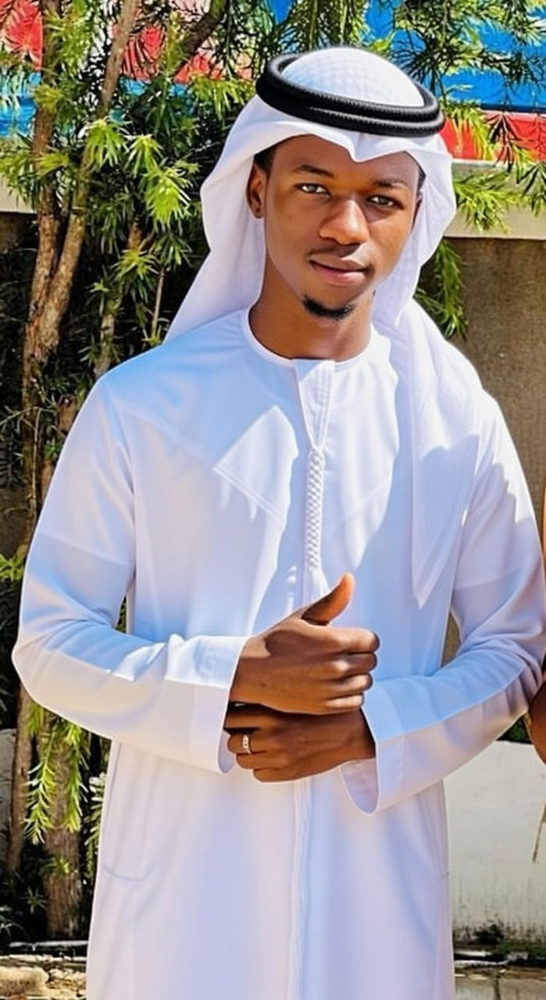

Our Journey
The Fashion Messiah

About our founder
Our founder, Tafadzwa Zynne, is a visionary fashion entrepreneur with a passion for creating stylish and sustainable clothing. With a background in fashion design and a commitment to ethical practices, Tafadzwa has been instrumental in shaping the identity of our brand.
HE TRULY IS THE FASHION MESSIAH
The History of Our Brand
Founded with a vision to create sustainable, timeless apparel, our brand has grown from a small studio workshop into a community-focused fashion destination.
Every piece we design is built on the values of quality craftsmanship, ethical production materials, and minimalist aesthetics.
Our commitment to sustainability and style has earned us a loyal following of fashion enthusiasts who share our passion for conscious consumerism.